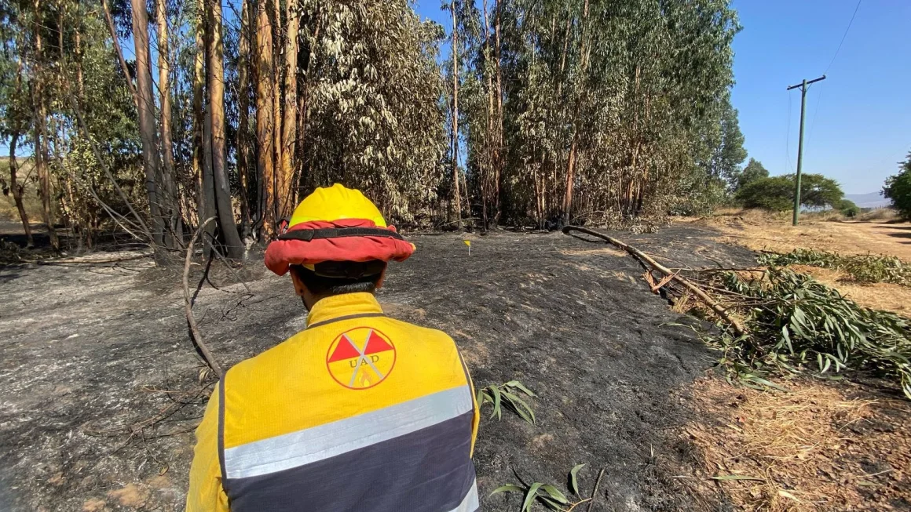

Cientos de pescadores bloquearon accesos en Valparaíso exigiendo subsidios y mejoras laborales tras meses de baja actividad.
Incendio forestal arrasa 50 hectáreas

Un voraz incendio en la zona rural de Casablanca fue contenido tras arduo trabajo de bomberos y apoyo aéreo.
Choque múltiple en Coquimbo
Cuatro buses interurbanos colisionaron en la Ruta 5 Norte, dejando al menos 15 heridos y congestión por horas.
Startup chilena crea app para reciclaje
En un contexto donde la conciencia ambiental se vuelve cada vez más urgente, una startup chilena ha decidido liderar el cambio. Se trata de EcoSmart, una innovadora empresa tecnológica que ha lanzado una aplicación móvil con un enfoque educativo y motivacional para incentivar el reciclaje en hogares urbanos y rurales. Esta plataforma no solo educa sobre cómo separar residuos correctamente, sino que además premia con puntos acumulables que pueden ser canjeados por beneficios en comercio local, servicios de transporte e incluso descuentos en cuentas de servicios básicos.
La aplicación, que ya supera las 50.000 descargas, utiliza inteligencia artificial para reconocer materiales reciclables a través de la cámara del celular y sugiere el contenedor adecuado para cada uno. Los usuarios pueden registrar su reciclaje diario y ver el impacto ambiental que generan en tiempo real, como kilos de plástico recuperado o litros de agua ahorrados. Además, la app establece rankings comunitarios por barrio y comuna, promoviendo la competencia saludable entre vecinos.
EcoSmart ha firmado convenios con más de 20 municipios a lo largo del país y cuenta con el respaldo de fondos de innovación de CORFO. Gracias a estas alianzas, las comunas participantes reciben reportes mensuales sobre el comportamiento ambiental de sus habitantes, lo que permite tomar decisiones más informadas respecto a infraestructura verde, rutas de recolección diferenciada y campañas educativas focalizadas.
Daniela Lagos, CEO de EcoSmart, señala: “Nuestro objetivo es demostrar que la tecnología puede ser una herramienta poderosa para empoderar ciudadanos y cambiar el modelo lineal de consumo. Queremos hacer del reciclaje una actividad cotidiana, gratificante y altamente visible”. Además, la empresa ha implementado un sistema de insignias que reconoce a los usuarios más activos, desde ‘Reciclador principiante’ hasta ‘Embajador ecológico’.
20 de abril de 2025
Café de barrio aumenta ventas con delivery
El tradicional “Café Esquina”, ubicado en un tranquilo sector de Ñuñoa, logró reinventarse en medio de las adversidades económicas mediante una estrategia tan simple como eficaz: el uso de WhatsApp como canal oficial de pedidos. Esta iniciativa, impulsada por sus propios dueños, permitió duplicar las ventas en menos de dos meses y posicionar el café como un ejemplo de innovación barrial en el uso de herramientas digitales.
A través de un catálogo interactivo enviado por chat, los clientes podían seleccionar entre una amplia variedad de cafés, repostería artesanal y opciones veganas, personalizar sus pedidos e incluso agendar horarios de entrega. El sistema, que inicialmente fue manual, evolucionó con el tiempo a un bot automatizado que responde consultas, confirma pedidos y mantiene informados a los clientes sobre promociones y productos nuevos.
Además, el café implementó un sistema de fidelización virtual: por cada cinco pedidos realizados, el cliente obtiene un café gratuito, generando un sentido de pertenencia y continuidad que atrajo no solo a residentes del barrio, sino también a oficinistas, estudiantes y turistas. “No teníamos presupuesto para invertir en una app profesional, así que aprovechamos lo que teníamos al alcance. Y resultó ser todo un éxito”, comenta Laura Morales, dueña del café.
El impacto fue tal que la Municipalidad de Santiago premió al establecimiento con un reconocimiento a la resiliencia comercial y lo incluyó en campañas de promoción para pequeños emprendimientos. Actualmente, el local planea expandir su estrategia a través de TikTok, con videos de recetas caseras, entrevistas a clientes fieles y un estilo comunicacional cercano que busca conectar emocionalmente con la comunidad.
20 de abril de 2025
Criptomonedas se estabilizan en Chile
Tras una temporada marcada por la volatilidad, las criptomonedas en Chile han comenzado a mostrar signos de estabilización. Según datos entregados por la Asociación de Fintech de Chile, el volumen de transacciones en plataformas digitales se ha estabilizado durante el primer trimestre de 2025, marcando una recuperación sostenida que ha devuelto la confianza a inversores individuales y fondos de inversión.
Esta nueva etapa de consolidación se ve reforzada por el reciente anuncio de la Comisión para el Mercado Financiero (CMF), que evalúa establecer una legislación integral para regular exchanges, custodios de activos y sistemas de pagos cripto en el país. La normativa buscaría mitigar riesgos de lavado de dinero, proteger a los usuarios de estafas, y brindar claridad tributaria sobre ganancias de capital obtenidas por operaciones con monedas digitales.
Los exchanges más importantes del país han reaccionado favorablemente a la noticia, colaborando activamente con la CMF para definir estándares operativos mínimos. En paralelo, bancos privados han iniciado mesas de trabajo para explorar productos financieros vinculados a criptomonedas, tales como fondos mutuos con exposición a activos digitales o cuentas de ahorro en stablecoins.
Desde el ámbito académico, universidades como la Pontificia Universidad Católica y la Universidad de Chile han lanzado diplomados en tecnología blockchain, con foco en aplicaciones legales, contables y de trazabilidad. Estas iniciativas buscan preparar a nuevos profesionales para un entorno económico más descentralizado, pero no por ello menos estructurado.
Aunque el futuro de las criptomonedas sigue siendo incierto a nivel global, en Chile se observa una tendencia hacia la madurez del ecosistema, con mayor participación institucional, desarrollo de talento especializado y mayor conciencia ciudadana sobre los riesgos y oportunidades de este tipo de activos. Todo indica que las criptomonedas llegaron para quedarse, pero esta vez bajo una mirada más regulada, transparente y profesionalizada.
20 de abril de 2025
Tabilo avanza a semifinales
Alejandro Tabilo venció con claridad al argentino Sebastián Báez, accediendo por primera vez a semifinales en el ATP de Santiago, tras una sólida actuación frente a su público.
Garín elimina a top 20
Cristian Garín sorprendió al derrotar al italiano Lorenzo Musetti, número 19 del mundo, en el ATP 500 de Barcelona, mostrando un juego sólido y estratégico durante todo el encuentro.
Jarry se retira por lesión
Nicolás Jarry abandonó el torneo en Barcelona por molestias en el hombro derecho. El tenista nacional priorizó su recuperación para no comprometer su participación en los próximos torneos.